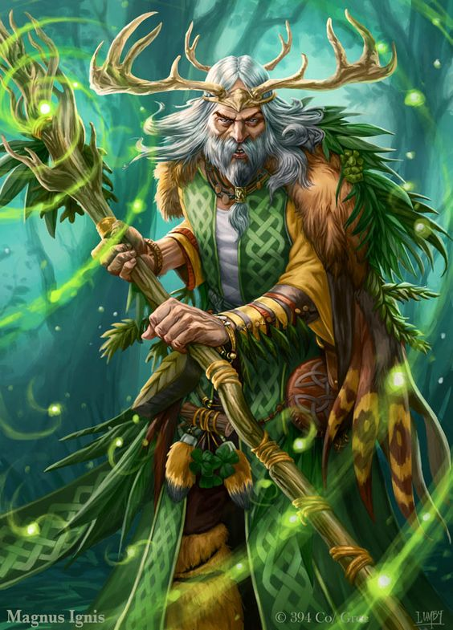

Erguendo um cajado retorcido envolto em azevinho, uma elfa invoca a fúria da tempestade e convoca raios explosivos
de eletricidade para destruir os orcs carregando tochas que ameaçam sua floresta. Se esgueirando, fora da vista,
no alto da copa das árvores na forma de um leopardo, um humano espreita para fora da selva, em direção da estranha
construção de um Templo do Elemental do Ar Maligno, mantendo os olhos fixos nas atividades dos cultistas. Brandindo
uma lâmina feita de puro fogo, um meioelfo investe em direção a uma massa de soldados esqueléticos,
destruindo a magia sobrenatural que deu as tolas criaturas o semblante falso de vida. Quer seja convocando as forças elementais
da natureza, ou emulando as criaturas do mundo animal, os druidas são encarnações da resistência, astúcia e fúria da natureza.
Eles não se consideram donos da natureza. Ao invés disso, eles se veem como extensões da vontade indomável da natureza.
FORÇA DA NATUREZA
Os druidas reverenciam a natureza acima de tudo, adquirindo suas magias e outros poderes mágicos, ou da força da natureza
per si ou de uma divindade da natureza. Muitos druidas buscam uma espiritualidade mística de união transcendental com a natureza
ao invés de se devotarem a uma entidade divina, enquanto outros servem deuses da natureza selvagem, animais ou forças elementais.
As antigas tradições druídicas, algumas vezes são chamadas de Crença Antiga, contrastando com a adoração de deuses em templos ou
santuários. As magias de druida são orientadas para a natureza e para os animais – o poder da presa e garra, do sol e da lua, do
fogo e da tormenta. Os druidas também adquirem a habilidade de transformarem em animais e alguns druidas fazem estudos pessoais dessa
pratica, chegando até mesmo ao ponto de preferirem formas animais a suas formas naturais.
PRESERVAÇÃO DO EQUILÍBRIO
Para os druidas, a natureza existe em um equilíbrio precário. Os quatro elementos que fizeram o mundo – água, ar, fogo e terra –
devem permanecer em equilíbrio. Se um elemento começar a ganhar mais poder que os outros, o mundo pode ser destruído, se transformando
em um dos planos elementais e se despedaçando em seus componentes elementais. Por tanto, os druidas se opõem a cultos de Elementais Malignos
e outros que promovem um elemento, excluindo os outros. Os druidas também estão preocupados com o delicado equilíbrio ecológico que sustenta
a vida animal e vegetal e a necessidade do povo civilizado de viver em harmonia com a natureza, não em oposição a ela. Os druidas aceitam
a crueldade da natureza, mas odeiam o que não é natural, incluindo aberrações (como observadores e devoradores de mentes) e mortos-vivos(como zumbis e vampiros).
Os druidas, as vezes, lideram incursões contra tais criaturas, especialmente quando os monstros invadem o território do druida.
Druidas, as vezes, são encontrados guardando locais sagrados ou vigiando regiões de natureza intocada.
Porém, quando um perigo significante surge, ameaçando o equilíbrio da natureza ou as terras que eles protegem,
os druidas tomam papeis mais ativos em combate contra as ameaças, como aventureiros.
CRIANDO UM DRUIDA
Quando estiver fazendo um druida, considere o motivo de seu personagem ter um elo tão próximo com a natureza.
Talvez, seu personagem vivesse em uma sociedade em que a Crença Antiga ainda prospera, ou foi criado por um druida
após ser abandonado nas profundezas de uma floresta. Talvez, seu personagem teve um encontro dramático com um espirito da natureza,
ficando face-aface com uma águia gigante ou um lobo atroz e sobreviveu a experiência. Ou ainda, seu personagem nasceu durante
uma tempestade ou erupção
vulcânica épica, que foi interpretada
como um sinal que, se tornar um druida
era parte do destino do seu personagem. Você sempre foi um aventureiro como parte do
seu chamado druídico ou você primeiro gastou um
tempo como um cuidador de um bosque ou fonte sagrados? Talvez, sua terra natal tenha sido manchada
pelo mal e você ingressou na vida de aventuras com esperança de encontrar uma nova casa ou proposito.
Fonte: Vertente Geek